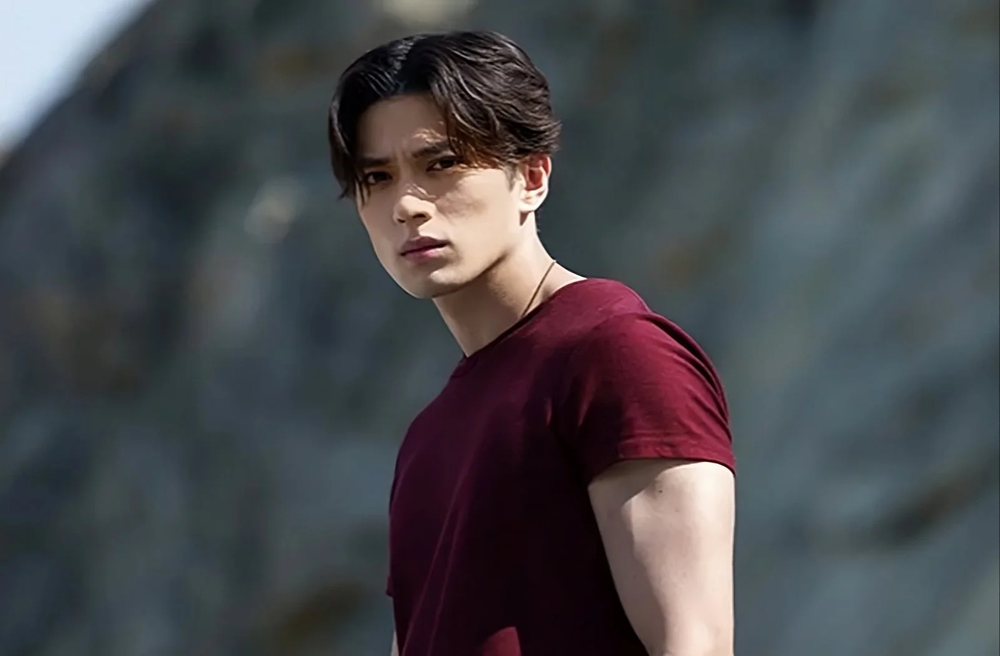
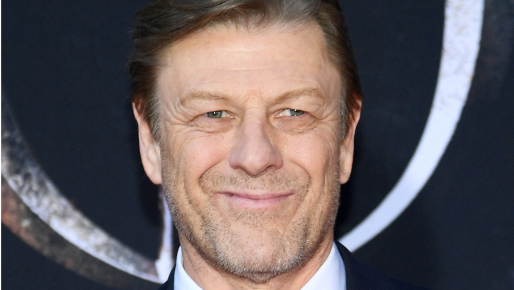
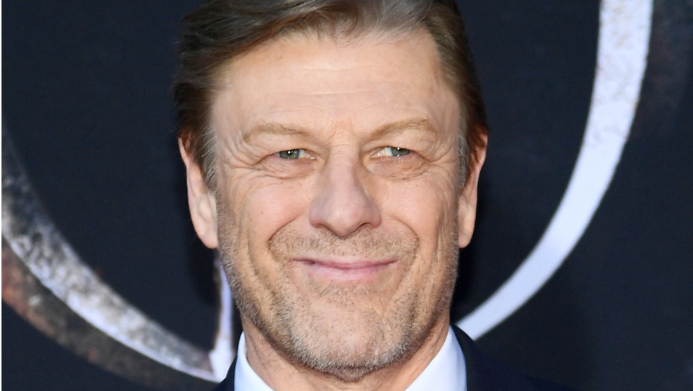
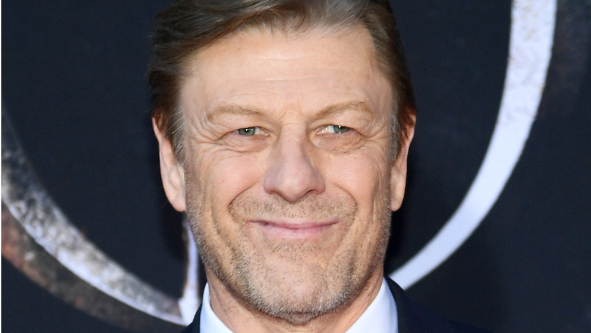
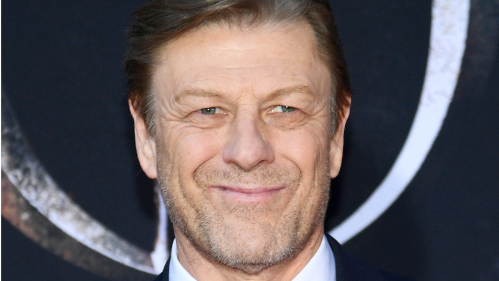

Informações sobre o filme
Elenco: J.J Jr Mackenyu (Seiya),Famke Janssen(Guraad),Sean Bean(Alman Kiddo)
DIretor: Tomasz Bagiński
Roteiro: Josh Campbell
Título original: Knights of the Zodiac

 


Elenco: J.J Jr Mackenyu (Seiya),Famke Janssen(Guraad),Sean Bean(Alman Kiddo)
DIretor: Tomasz Bagiński
Roteiro: Josh Campbell
Título original: Knights of the Zodiac

Seiya, um obstinado adolescente de rua, passa seu tempo lutando por dinheiro enquanto procura por sua irmã sequestrada. Quando uma de suas lutas inadvertidamente desperta poderes místicos que ele nunca soube que tinha, Seiya se vê lançado em um mundo de santos guerreiros, treinamento mágico antigo e uma deusa reencarnada que precisa de sua proteção. Se ele quiser sobreviver, precisará abraçar seu destino e sacrificar tudo para ocupar seu lugar de direito entre os Cavaleiros do Zodíaco.
Em breve nos cinemas!